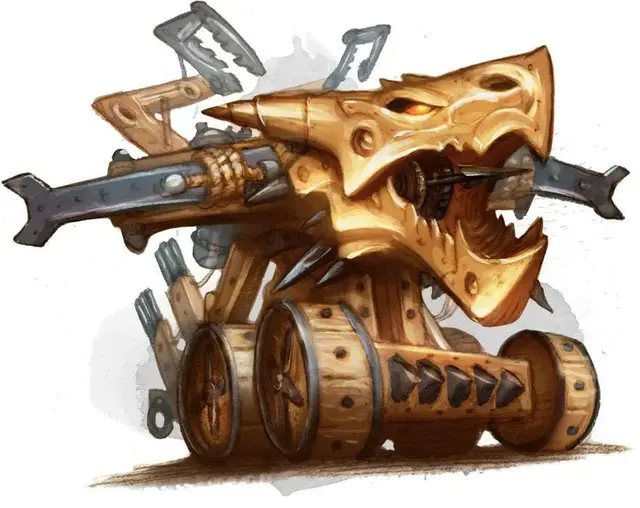

Дубовый Стрелок
Oaken Bolter
Средний Конструкт, без мировоззрения

Класс Доспеха 16 (природный доспех)
Хиты 58 (9к8 + 18)
Скорость 30 футов
| мод | спас | ||
|---|---|---|---|
| СИЛ | 12 | +1 | +1 |
| ЛОВ | 18 | +4 | +4 |
| ТЕЛ | 15 | +2 | +2 |
| мод | спас | ||
|---|---|---|---|
| ИНТ | 3 | −4 | −4 |
| МДР | 10 | +0 | +0 |
| ХАР | 1 | −5 | −5 |
Иммунитет к урону яд; дробящий, колющий, рубящий от немагических атак, кроме нанесённых адамантиновым оружием
Иммунитет к состояниям окаменение, отравление, паралич, очарование, испуг, истощение
Чувства тёмное зрение 60 футов, пассивное Восприятие 10
Опасность 5 (1800 опыта)
Бонус мастерства +3
Среда обитания Горы, Лес, Луг, Холмы
Особенности
Языки:. Понимает лишь один язык своего создателя, но не говорит на нём
Сопротивление магии. Дубовый Стрелок совершает с преимуществом спасброски от заклинаний и прочих магических эффектов.
Заводной механизм можно настроить, добавив одно из следующих улучшений или потенциальных уязвимостей в его блок статистики. Вы можете определить их случайно или выбрать пару модификаций соответствующих характеру создателя механизма.
Модификации Заводных Механизмов (к10). 1. Камуфляж. Заводной механизм получает владение навыком Скрытность, если ещё не имеет его. Когда он не двигается - он не отличим от выключенных машин.
2. Сенсоры. Дальность тёмного зрения механизма увеличивается до 120 футов, если не была выше. Он получает владение навыком Восприятие, если ещё не имеет его.
3. Улучшенная Броня. КД заводного механизма повышается на 2.
4. Увеличенная Скорость. Скорость заводного механизма увеличивается на 10 футов
5. Укреплённая конструкция. Заводной механизм получает сопротивление урону силовым полем, электричеством и звуком.
6. Самовосстановление. Если заводной механизм начинает свой ход хотя бы с одним хитом, он восстанавливает 5 хитов. Если он получал урон электричеством, эта способность не сработает в начале следующего хода.
7. Прочный каркас. Максимальное значение хитов заводного механизма увеличивается на число равное числу его Костей Хитов.
8. Присоски. Заводной механизм получает скорость лазания 30 футов
9. Вокальный Резонатор. Заводной механизм приобретает возможность говорить на ломанном Общем или Гномьем (по выбору создателя).
10. Водные двигатели. Заводной механизм получает скорость плавания 30 футов
Неисправности Заводных Механизмов (к10). 1. Неисправные сенсоры. Бросайте к6 в начале каждого хода заводного механизма. Если выпадает "1", механизм Ослеплён до конца хода.
2. Сбитый прицел. Бросайте к6 в начале каждого хода заводного механизма. Если выпадает "1", механизм совершает броски атаки с помехой до конца хода.
3. Плохое заземление. Заводной механизм получает уязвимость к урону электричеством.
4. Закольцованная память. Бросайте к6 в начале каждого хода заводного механизма. Если выпадает "1", механизм принимает одно из существ в пределах 30 футов за своего создателя. Механизм не будет атаковать его в течении минуты или до тех пор, пока существо не нападёт на него.
5. Утечка масла. Бросайте к6 в начале каждого хода заводного механизма. Если выпадает "1", механизм получает одну степень истощения, если не имеет иммунитета от него.
6. Ограниченное передвижение. Заводной механизм может передвигаться только по прямой. Он может повернуться на 90 градусов до начала своего движения и ещё один раз в середине. Он может свободно вращаться на месте, если двигался в свой ход.
7. Программа самосохранения. Если хиты заводного механизма составляют половину от максимума или ниже, в начале его хода бросайте к6. Если выпадает "1", механизм сбегает из боя. Если отступление невозможно - продолжает сражаться.
8. Перегрев. Бросайте к6 в начале каждого хода заводного механизма. Если выпадает "1", механизм недееспособен до конца своего хода.
9. Ржавые шестерни. Заводной механизм совершает с помехой броски инициативы, а его скорость снижена на 10 футов
10. Недостаточное бронирование. Заводной механизм теряет иммунитет к дробящему, колющему, и рубящему урону от немагических атак оружием, которое при этом не изготовлено из адамантия.
Действия
Мультиатака. Дубовый стрелок совершает два пронзающих выстрела или один пронзающий выстрел и одну атаку гарпуном.
Пронзающий выстрел. Рукопашная или дальнобойная атака оружием: +7 к попаданию, досягаемость 5 футов или дистанция 100/400 футов, одна цель. Попадание: 15 (2к10 + 4) колющий урон.
Гарпун. Дальнобойная атака оружием: +7 к попаданию, дистанция 50/200 футов, одна цель. Попадание: 9 (1к10 + 4) колющий урон, и цель схвачена (Сл высвобождения 12). Скорость схваченного этой атакой существа не снижается, но оно может двигаться только в направлении к Дубовому стрелку. Существо получает 5 (1к10) рубящего урона если оно высвобождается из захвата или если пытается, но терпит неудачу. Бонусным действием Дубовый стрелок может притянуть схваченное им существо на 20 футов ближе. Дубовый стрелок может иметь только одно схваченное существо одновременно.
Взрывной снаряд (Перезарядка 5–6). Дубовый стрелок выпускает взрывной снаряд в точку в пределах 120 футов. Каждое существо в пределах 20 футов от этой точки должно преуспеть в спасброске Ловкости (Сл 15), получая 17 (5к6) урона огнём при провале, или половину этого урона при успехе.
Описание
Не совсем обычная баллиста, Дубовый Стрелок - это механизм, способный поражать противника на большой дистанции. Его снаряды способны разрывать плоть, пробивать броню, или сталкивать врага к ловушкам или другим механизмам, ориентированным на ближний бой — а на коротких дистанциях, уничтожать мощным взрывом.